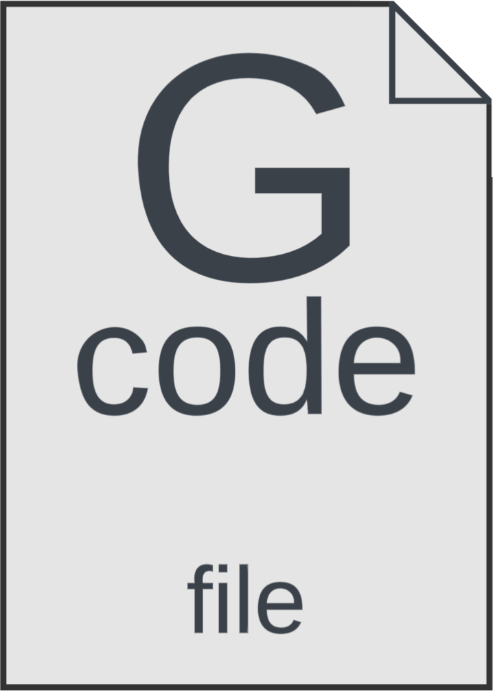

| This still untested |
Purpose
This program was developed to support experiments with a curvilinear slide. It is quite general. It moves the cutter over, retracts it, returns and then does it again. It is structured with variables to be easily reconfigured.
Program Designer
If you have any questions, contact Chuck Peplinski
Gcode
|  | Right-click on the file icon shown to the left, and then select Save Link As... to save it in Rosetta’s Gcode folder (in the Save window, click Gcode in the list on the left): |
| ~/linuxcnc/configs/Rosetta/gcode | |
| The recommended file name is | |
| n_pass.ngc |
How it Works
I developed this using Claude AI to control my experiments with a curvilinear pattern. Variables at the head of the file make it easy to reconfigure. Starting from home, the cutter stays in place (dwells) for a full rotation, then we move along the Z axis to the end (z_stroke) where we stay in place (dwell) for a full rotation. Upon reaching the end we retract on the X axis. If n_pass is more than one we return to the start, reengage the X axis more deeply, and do it again.
Note that z_stroke can be negative to move right to left. For curvilinear work it is advantageous to use a higher sp0_rpm (maybe 3 or 4) and a very slow movement on the Z axis. Approach Options
Axes & Movement Notes
| Axis | Usage | Comments
|
| X or U |
(what is this axis used for?) |
(comments) |
User Data to be Entered
The user will need to set these data:
| Variable | Data to set |
| #1 | (what this is used for) |